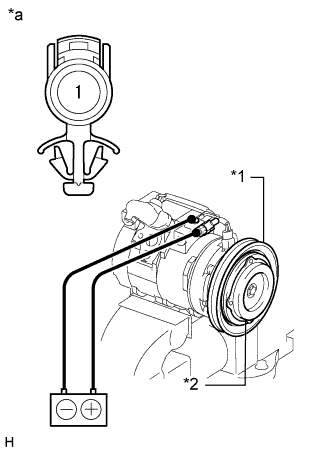

КОМПРЕССОР (для моделей с 5L-E) > ПРОВЕРКА |
| 1. ПРОВЕРЬТЕ КОМПРЕССОР И ЭЛЕКТРОМАГНИТНУЮ МУФТУ |
Проверьте работу.
Запустите двигатель.
Проверьте шкив компрессора.
|  |
Проверьте компрессор системы кондиционирования.
Отсоедините разъем.
Подайте напряжение аккумуляторной батареи на муфту и проверьте ее работу.
| Условия измерений | Заданные условия |
| Положительный (+) вывод аккумуляторной батареи → контакт 1 Отрицательный (-) вывод аккумуляторной батареи → масса кузова | Электромагнитная муфта входит в зацепление |
| *1 | Ротор электромагнитной муфты |
| *2 | Ступица электромагнитной муфты |
| *a | Устройство с неподсоединенным жгутом проводов (электромагнитная муфта в сборе) |